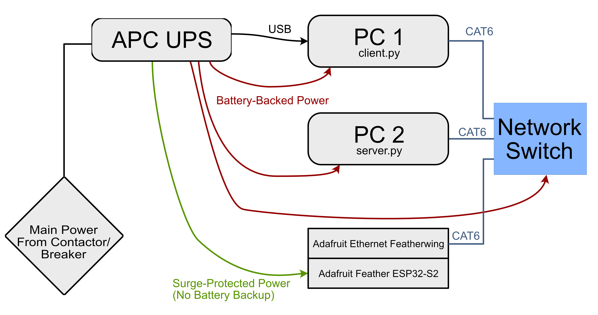

Tl;DR Computers hate having their power abruptly cut. A UPS, an Adafruit Feather board, and some python hackery keeps computers booting and shutting down gracefully when power is yanked and restored, deliberately or not.
My dayjob involves solving technical problems for a large, multi-acre education facility with over 400 computer-driven interactives. To prolong the life of these devices (many of which are built around off-the-shelf computers and monitors), we like to power them down after operating hours and start them up in the morning. These are mostly windows machines, and just like a desktop they love to be rebooted.
What makes this challenging is both the number and placement of these devices. While many are in dedicated control rooms with linked KVM systems, even using a mouse and keyboard to manually shut down 400 PCs would take the onsite staff far longer than designed, and could be error-prone. Worse, some computers are embedded inside consoles, cabinets, and displays, making the process of walking around and hitting power buttons (where accessible) or using a wireless keyboard (where not) even longer. The same is true of startup, except that a wireless keyboard isn't an option in that case. A central startup and shutdown solution is essential.
Not from my workplace, but grabbed from google images - just as an example of how involved a software-defined control system can be.
Of course, there are many ways to make this happen. The most ideal, when the money is available, is to use a central controller, like a Medialon System, Creston Controller, TouchDesigner interface, or similar. The control is put in charge of signalling the computers to wake up (via Wake-on-LAN), shut down (through proprietary software modules), and handles cycling remotely-controller AC breakers, turning projcets on and off via various ethernet protocols, and so on. The dream is for whoever's operating the system to press one button (or click one button on a screen) to have the whole system turn on, or off.
Life is rarely a dream.
We sometimes run into a situation where, for reasons of cost, planning, location, or timing, there is no exterior control of any kind. There's just a breaker in a panel (which may or may not be remote controlled) providing power to an installed cabinet. And as much as PC's love to be rebooted, they hate having their power yanked unexpectedly.
So the challenge is: given only control over their power, can we create a system that soft-starts and soft-shuts-down a PC? (Yes we can, or this would be a very short post.)
Shutdown
Getting a PC to soft shutdown on power loss is relatively straightfoward. There are (fairly fancy) networkable UPS systems and add-on cards that are meant just for this kind of thing. When mains power is killed, the UPS kicks into keep the computer(s) in question on, while sending a network message to do... whatever you want. Wait a minute then hibernate, run a backup, dump memory, etc.
Unfortunately, these solutions are somewhat cost-prohibitive, and also rather large. They seem designed for rackmount systems where they could be used to manage a bank of servers. The particular situation that I'm building this for for is very tightly space-confired, and doing it for less than a grand would be great.
A cheap, off the shelf, 300W / ~30wH UPS. At time of writing, about $60 shipped.
Thankfully, there's a way to make this work on a cheaper and smaller UPS. Many off-the-shelf UPS's have the abilitiy to connect directly to a single PC via USB connection. APC, who makes consumer UPSes, has such a connection on even their very basic units. They even include some basic software (Powerchute) that can tell the computer to hibernate, shutdown, wait a few minutes and shutdown, etc when the batteries kick in. Sounds perfect, no?
Not quite - we only have the ability to hook one computer directly to the UPS, but we'd like to power multiple small computers (often NUCs) off a single UPS. And there's no obvious way to hook into the Powerchute software directly. Having one UPS per computer would be an option, but a needlessly expensive one. Sometimes there's not even enough room for that to be possible.
The workaround is straightfoward - the Powerchute software logs an event to the Window System Log when it swtches to battery power. We can use Window's built-in task scheduling service to fire off a script of our choosing when this event occurs. Then it's just a matter of crafting some very basic network scripts to allow the UPS-connected computer to tell other computers to shut down, then shut itself down.
Here's what I came up with. It's not terrible robust, secure, or debuggable, but it's getting the job done for now. The client script runs on the computer connected to a UPS, and is triggered when the UPS switches to battery power. The server runs on as many connected computers as we want, and should be set to run at startup. The (static) IPs of the computers running the server script must be enterred in the client script.
client.py
Scroll to see full code
server.py
Scroll to see full code
Startup
An Adafruit ESP-32 Featherwing - the purple Neopixel light indicates the unit has booted but does not see an attached ethernet cable
Almost every BIOS has the ability to wake the system when power is restored following an unexpected power loss. Most have the ability to boot the computer when power is removed and restored, regardless of whether the computer was gently shut down or rudely had its power cut. Unfortunately, neither of these options work for us - since the computer is on a UPS, as far the the power supply is concerned, the computer never loses power. So, we'll have to rely on some other mechanism to detect when power is restored to cause the computer(s) to boot.
The hammer for this particular nail is a small, ethernet-capable microcontroller that sends out Wake-on-LAN packets at regular intervals whenever its powered on. We plug this microcontroller into an outlet not backed by the UPS - when power is lost, the microcontroller shuts off almost immediately, allowing the computers to shut down as above. When power is restored, the microcontroller starts up and, after a brief delay, starts sending out Wake-On-LAN messages to all the MAC addresses it knows about.
I chose the Adafruit ESP-32 Feather for a couple reasons. One, Python is my language of choice for hacking things together, and I was excited to play more with CircuitPython. Second, Adafruit's commitment to documentation and process is just great, and I wanted to get this project up on its feet quickly. And third, Adafruit's Featherwing line of accessory boards (specifically the Ethernet Featherwing) made it easy to get an Ethernet Stack and PHY running with minimal custom effort.
So, I bashed together the following code to wake up, establish a network connection, and send a Wake-On-LAN message to each MAC address in a given array every 15 seconds or so:
code.py
Scroll to see full code
If you're making use of this code yourself, you'll need the following libraries in your CIRCUITPY/libs folder:
And, if it's helpful, here is the basic process of getting the ESP32-S2 feather up and running (summarized from Adafruit's excellent guide):
System Diagram
Step-by-Step Instructions
For those who came here looking for an actual step-by-step how-to, here's the full process of getting this system set up. (This is based on my particular steps with the Intel NUCs and APC UPS in the most recent setup - some steps, especially relating to the BIOS, may need to be adjusted for your hardware.)
Computer Info Gathering
Feather Prep
Physical Install
Wake on Lan Setup
Control Computer Setup
This will be the computer listening to the status of the UPS, and telling the other computers to turn off. There should be only one per setup.
172.16.0.1client.py code from above to a convienient file location on the computer (desktop, My Documents, etc).client.py script from wherever you put itTarget Computer Setup
These computers will run a script on boot that listens for commands from the client computer to shut down. There can be as many of these per system as you like.
172.16.0.2; if you add additional computers, you will need to add them to them to the deviceIPs array in the client.py script.server.py code from above to a convienient file location on the computer (desktop, My Documents, etc).server.py script in your startup folder. In Windows 10, this is located by default at: C:/users/{username}/AppData/Roaming/Microsoft/Windows/Start Menu/Programs/Startup. Any shortcuts/executables in this folder get executed automatically when Windows boots.